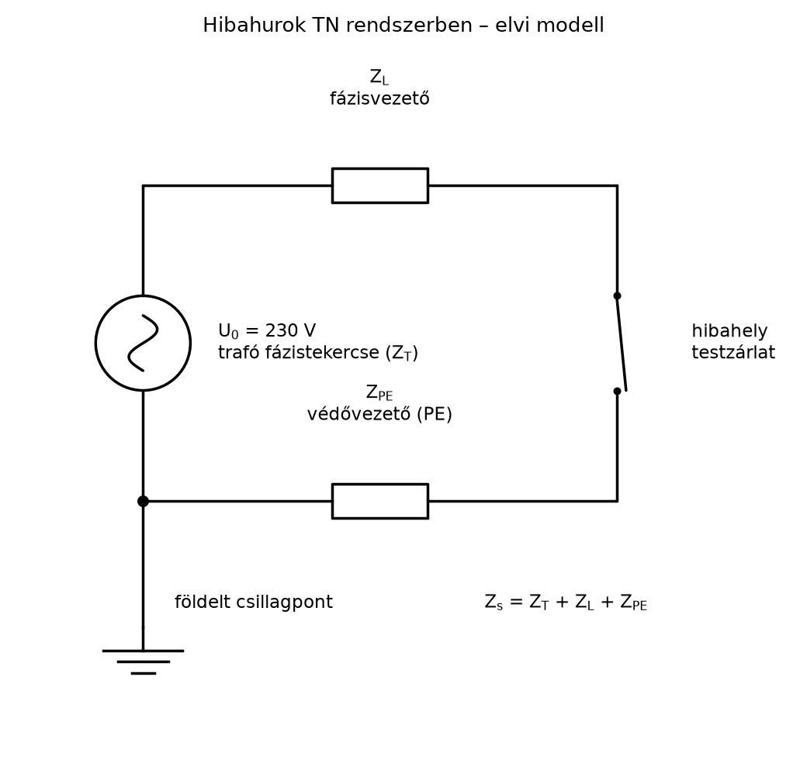
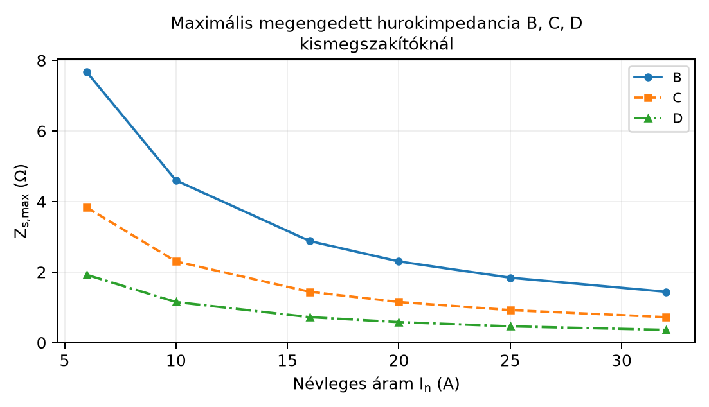

Egy lakásfelújításon a kismegszakító bekötése után a kolléga megkérdezi: „Most már ugye ha testzárlat lesz, lekapcsol azonnal a 16 A-es C kismegszakító?” A válasz nem az, hogy „persze”, hanem az, hogy meg kell mérni a hibahurok impedanciáját. Hiába van 16 A-es C kismegszakító, ha a hálózat hurokimpedanciája túl nagy, a zárlati áram kicsi marad, a kismegszakító pedig nem old ki a megkövetelt időn belül. Ebben az alfejezetben megtanulod, hogyan lehet ezt számszerűen ellenőrizni.
Amikor egy fázisvezető a készülék fémházához ér, a hibaáram nem „eltűnik”, hanem visszazár a transzformátor csillagpontjához. TN-rendszerben ez az út: transzformátor fázistekercse → fázisvezető → hibahely → készülékház → védővezető (PE vagy PEN) → vissza a transzformátor csillagpontjához. Az egész hurok ellenállása és reaktanciája együtt a hurokimpedancia.

A rajz azt szemlélteti, hogy a hiba nem más, mint egy záródó kapcsoló (a rajzon működtetett, zárt állapotban), amely a fázisfeszültséget a hurok impedanciájára kapcsolja. Ha a hurok nagy, az áram kicsi; ha kicsi, az áram nagy.
Definíció. Hibahurok. A hibahurok a hibaáram teljes útja a fázisfeszültség forrásától a hibahelyen át a védővezetőn keresztül vissza a forrás csillagpontjához. TN-rendszerben ez a fázisvezető, a hibahely, a védővezető (PE), a PEN-vezeték, valamint a transzformátor belső impedanciája és az összes csatlakozás.
Definíció. Hurokimpedancia (). A hibahurok teljes impedanciáját hurokimpedanciának nevezzük. Értéke a fázis–védővezető hurok teljes ellenállásából és reaktanciájából adódik, mértékegysége ohm.
Definíció. Kioldási áram (). Az a legkisebb hibaáram, amelynél a védőeszköz a megkövetelt kioldási időn belül biztosan lekapcsol. Kismegszakítónál ez a pillanatkioldó (mágneses kioldó) megbízhatóan működő áramértékének felső határa; olvadóbiztosítónál a kioldási görbéből meghatározott érték.
Definíció. Automatikus lekapcsolás. A hibavédelem azon módja, amely testzárlat esetén a védőeszközzel a hibaáramkört meghatározott időn belül önműködően lekapcsolja, így a hálózatról az érinthető test feszültségét megszünteti.
TN-rendszerben a hibaáramot a fázisfeszültség és a hurokimpedancia határozza meg:
ahol a névleges fázisfeszültség (230 V), pedig a hibahelyen mérhető hurokimpedancia.
A védelem akkor működik megbízhatóan, ha a hibaáram legalább akkora, mint a védőeszköz kioldási árama:
Behelyettesítve:
Összefüggés. TN-rendszer kioldási feltétele.
ahol a mért hurokimpedancia, a névleges fázisfeszültség (230 V), a védőeszköz kioldási árama.
Ebből adódik a maximális megengedett hurokimpedancia:
Ha a mérés szerint nagyobb, mint , a védőeszköz nem old ki a megkövetelt időn belül, tehát a hiba fennmarad, és a készülék teste tartósan veszélyes feszültségre kerülhet.
Megjegyzés. A gyakorlatban a hurokimpedanciát fázis és védővezető (PE) között mérjük. A mérést a későbbiekben a Mérések II.: hurokimpedancia, zárlati áram, FI-vizsgálat alfejezetben részletezzük.
A lakossági és ipari elosztókban leggyakrabban B, C és D kioldási jellegű kismegszakítókat használunk. A pillanatkioldó sávja:
Szabály. A legnagyobb kioldási árammal számolunk. A megengedett maximális hurokimpedanciát a pillanatkioldó sáv felső határával kell számolni, mert a zárlati áramnak a megszakítót biztonsággal működtető legnagyobb áramot is el kell érnie. Például C 16 A esetén ; B 25 A esetén . Az alsó határ csak tájékoztató, a tervezéshez nem elegendő.
Figyelem. A pontos kioldási sávok és a hozzájuk tartozó hurokimpedancia-értékek a gyártói adatlapról vagy a vonatkozó szabványból ellenőrizendők; az itt közölt szorzók tanulási példák.
Ábra: a megengedett hurokimpedancia a névleges áram függvényében. A határ a három kioldási jellegre, a pillanatkioldó sáv felső határával (, , illetve ) és -tal számolva, 6 A-től 63 A-ig (függőleges tengely logaritmikus). Látszik, hogy azonos névleges áramnál a D jellegű kismegszakítóhoz négyszer kisebb hurokimpedancia kell, mint a B jellegűhöz, és a névleges áram növelésével a határ fordított arányban csökken (B16: 2,88 Ω; C16: 1,44 Ω). A HTML-változatban a mért beállítható, és a program jelzi, hogy teljesül-e a kioldási feltétel.
Szabvány. Az automatikus lekapcsolás követelményeit az MSZ HD 60364-4-41 tartalmazza. A kismegszakítókra vonatkozó kioldási jellemzőket az MSZ EN 60898-1 (háztartási és hasonló alkalmazások) és az MSZ EN 60947-2 (ipari megszakítók) írja le. A hurokimpedancia-mérő műszerekre az MSZ EN 61557 szabvány vonatkozik. A pontos kioldási időket és határértékeket az aktuális szabványkiadás és a gyártói adatlap tartalmazza, ezért mindig ellenőrizendők.
Szabály. Kioldási idő követelmény. A megengedett lekapcsolási idő a rendszertől és az áramkör fajtájától függ (tanulási értékek, ):
| Rendszer | Legfeljebb 32 A-es végáramkör | Elosztó áramkör és 32 A feletti végáramkör |
|---|---|---|
| TN | 0,4 s | 5 s |
| TT | 0,2 s | 1 s |
(ellenőrizendő: MSZ HD 60364-4-41 aktuális kiadása, a feltételek pontos megfogalmazása). A pillanatkioldó felső határával számolt mellett a kismegszakító mágneses kioldása (jellemzően 0,1 s alatt) a 0,4 s-ot bőven teljesíti; az 5 s-os idő annál számít, ahol a hőkioldó is elég lehet. TT-rendszerben a hibavédelmet általában FI látja el (lásd az Áram-védőkapcsoló (FI) és kiegészítő védelem alfejezetet).
Adott: TN-rendszer, , kismegszakító , C jelleg. Keresett: maximális megengedett hurokimpedancia, .
Képlet és behelyettesítés:
C jellegnél a felső kioldási határ:
Eredmény: .
Ellenőrzés: ha (a határérték, kerekítve 1,44 Ω), akkor a zárlati áram : a határértéknél a hibaáram éppen 160 A, a mért értéknek ennél kisebbnek kell lennie, tartalékkal. Tartalék. A hurokimpedanciát hideg vezetőn mérjük, zárlatkor a vezető felmelegszik (az ellenállása nő), a műszernek pedig mérési bizonytalansága van (MSZ EN 61557-3). Ezért a mért (hideg) -t a megengedett érték csak egy hányadával szabad összevetni; tanulási szabályként (ellenőrizendő: MSZ HD 60364-6 és a műszer adatlapja). A gyártói táblázatban megadott értéket kell használni. Jelölés a példákban: a „megfelel” a számított elméleti összevetését jelenti (tartalék nélkül); a mérés kiértékelésénél a -os tartalékot is megnézzük, és az eredményt külön kimondjuk.
Adott: TN-rendszer, , , B jelleg. Keresett: , és annak eldöntése, hogy egy mért érték megfelel-e.
Számítás:
B jellegnél:
A mért érték:
tehát a számított határértékkel összevetve (tartalék nélkül) megfelel. A -os tartalékkal () a mért 1,5 Ω már nem felel meg: a kör felülvizsgálandó (a kötések, a vezetékhossz ellenőrzése, vagy kisebb névleges áramú védőeszköz).
Ellenőrzés: a tényleges hibaáram , ami nagyobb, mint 125 A, ezért a kismegszakító pillanatkioldója gyorsan kiold.
TT-rendszerben a fogyasztó testét saját földelőhöz kötik, nem a transzformátor csillagpontjához visszavezetett PE-vezetőhöz. A hibaáram útja: fázisvezető → hibahely → készüléktest → helyi földelés → föld → a transzformátor csillagpontjának földelése. Mivel a földelési ellenállások viszonylag nagyok (például 10–100 Ω), a hibaáram kicsi, gyakran csak néhány amper. A kismegszakító ilyenkor általában nem old ki, ezért a TT-rendszerben a hibavédelem eszköze tipikusan az áram-védőkapcsoló (RCD, köznyelvi FI-relé).
A TT-rendszerben az érintési feszültség akkor marad a megengedett érték alatt, ha:
ahol a fogyasztói oldal földelési ellenállása, az áram-védőkapcsoló névleges kioldási árama, a megengedett érintési feszültség (jellemzően 50 V, nedves környezetben 25 V – ellenőrizendő).
Összefüggés. TT-rendszer feltétele FI-relével.
Ha például 30 mA érzékenységű FI-relét használunk, a földelési ellenállás legfeljebb:
lehet elméletileg. A gyakorlatban a földelőt sokkal kisebbre, legfeljebb néhány tíz ohmra méretezik, mert a nagy érték nem stabil, és az érintési feszültség már kisebb hibánál is ingadozhat. A földelési ellenállás méréséről a Földelők és földelési ellenállás alfejezetben lesz részletesen szó.
A következő ábra a maximális megengedett hurokimpedanciát mutatja a kismegszakító jellegének és névleges áramának függvényében.
Mit lehet kipróbálni? A kalkulátorban megadható a hálózati feszültség (jellemzően 230 V), a kismegszakító névleges árama és a kioldási jelleg (B, C, D), valamint a mért hurokimpedancia. A program kiszámolja a értéket, és jelzi, hogy a mért érték megfelel-e a kioldási feltételnek.
Statikus tartalék ábra leírása: A grafikon vízszintes tengelyén a kismegszakító névleges árama (6–32 A), a függőleges tengelyen a maximális megengedett hurokimpedancia ohmban látható. Három lefelé hajló görbe mutatja a B, C és D jellegeket; a B jelleg a legmagasabban, a D a legalacsonyabban fut. Az ábra szemlélteti, hogy nagyobb névleges áramnál és nagyobb kioldási szorzónál kisebb hurokimpedancia szükséges.

Egy régi lakás felújításánál a szerelő a hálózat átalakítása után hurokimpedanciát mért a konyhai aljzatkörnél. A kör 16 A-es C jellegű kismegszakítóval volt védve. A mért érték lett, míg a megengedett maximum 1,44 Ω. A mérés azt mutatta, hogy a megszakító ugyan a hosszan tartó túlterhelés ellen véd, de gyors hibaleválasztáshoz nem elegendő. A javítás kétirányú volt: a szerelő a hosszú, kis keresztmetszetű tápvezeték egy részét nagyobb keresztmetszetre cserélte, majd 30 mA-es áram-védőkapcsolót épített be. A FI biztosította a hibavédelmet akkor is, ha a hurokimpedancia a jövőben megnő, például egy csatlakozás öregedése miatt.
A hurokimpedanciát a feszültség alatt lévő hálózaton, arra alkalmas műszerrel mérjük. Biztonsági korlát. A feladat tanműhelyi környezetre vagy jogosult oktató felügyeletére vonatkozik; hálózati feszültségen önállóan ne végezd. A méréshez megfelelő CAT III vagy CAT IV besorolású műszer, hibátlan mérőzsinór és a mérés előtti műszerellenőrzés szükséges. A mérési módszert és a hibakeresést a Mérések II.: hurokimpedancia, zárlati áram, FI-vizsgálat alfejezetben tanuljuk meg.
1. Hiba: csak a kismegszakító névleges áramát nézik, a hurokimpedanciát nem mérik. A 16 A-es C megszakító 16 A-re véd, de a testzárlat esetén 160 A-nek kellene folynia. A túl nagy hurok miatt ez nem alakul ki, ezért a kismegszakító nem old le. A helyes gyakorlat: mindig mérjük a hurokimpedanciát, és hasonlítsuk a megengedetthez.
2. Hiba: a kioldási sáv alsó határával számolnak. C karakterisztikánál azt gondolják, hogy 5-szörös névleges áram is elég, ezért 80 A-nél kiold. A valóságban a pillanatkioldó csak 160 A-nél garantált C 16 A-nél. A megengedett hurokimpedanciát a felső határral kell meghatározni.
3. Hiba: TT-rendszerben túláramvédelemre bízzák a hibavédelmet. A nagy földelési ellenállás miatt a hibaáram kicsi, a kismegszakító nem old ki. TT-ben mindig megfelelően érzékeny FI-relét kell beépíteni, a feltételt a egyenlőtlenséggel ellenőrizni.
1. kérdés. Igaz vagy hamis? A hurokimpedancia a hibaáram útjának teljes impedanciája, ezért minél nagyobb, annál nagyobb lesz a testzárlati áram.
2. kérdés. Miért kell C jellegnél 10-szeres névleges árammal számolni a kioldási feltételt?
3. kérdés. Számold ki fejben: B 10 A kismegszakító esetén mennyi a maximális megengedett hurokimpedancia? ()
4. kérdés. TT-rendszerben 100 Ω földelési ellenállás és 30 mA FI-relé esetén mekkora az érintési feszültség, és megfelel-e az 50 V-os határnak?
5. kérdés. Mi a hiba a szerelő érvelésében? A szerelő azt állítja, hogy a mérés során a hurokimpedanciát nem kell ellenőrizni, mert a kismegszakító katalógusban megadott zárlati áramot önmagában meg tudja szakítani.
1. feladat (A). Definiáld a hibahurkot és írd fel a TN-rendszer kioldási feltételét.
2. feladat (A). Számítsd ki a maximális megengedett hurokimpedanciát B 10 A és C 20 A kismegszakítókra, mellett.
3. feladat (B). Egy mérés során 20 A C jellegű megszakítónál értéket kaptunk. Ellenőrizd, megfelel-e a kioldási feltételnek.
4. feladat (B). TT-rendszerben a fogyasztói földelő ellenállása . 30 mA-es FI-relé esetén mekkora a maximális érintési feszültség, és megfelel-e?
5. feladat (C). Egy elosztóban mérve . Milyen jellegű és névleges áramú kismegszakítót lehet legfeljebb beépíteni, ha a kioldási feltételt mindenképpen teljesíteni kell? Válassz az alábbi lehetőségek közül: B 10 A, B 16 A, C 16 A, C 25 A, D 16 A. Számolással indokold.
6. feladat (D). Egy régi lakáselosztóban 16 A C kismegszakító véd egy aljzatkört, a mért hurokimpedancia 2,2 Ω. Mit javasolsz? Fogalmazz meg legalább két intézkedést, és magyarázd el, miért javítják a hibavédelmet.
Önellenőrzés – válaszok:
1. feladat megoldása (A): A hibahurok a hibaáram útja a fázisfeszültség forrásától a hibahelyen át a védővezetőn keresztül vissza a forrás csillagpontjához. TN-rendszer kioldási feltétele: , ahol a hurokimpedancia, a fázisfeszültség, a védőeszköz kioldási árama.
2. feladat megoldása (A): B 10 A: ; . C 20 A: ; .
3. feladat megoldása (B): 20 A C: ; . Mért 1,1 Ω ≤ 1,15 Ω, tehát a tartalék nélküli összevetés szerint megfelel. Ellenőrzés: , de a feltétel csak 4,5%-os tartalékkal teljesül, ami a melegedést és a mérési bizonytalanságot nem fedi le: a -os szabály szerint () nem felel meg.
4. feladat megoldása (B): . Ez messze 50 V alatt van, tehát megfelel.
5. feladat megoldása (C): A mért . Minden kismegszakítónál ki kell számolni a megengedett maximális hurokot:
Tehát a tartalék nélküli összevetésben a B 10 A és a B 16 A használható; a -os tartalékkal biztonsággal csak a B 10 A. A C 16 A, C 25 A és D 16 A egyik módszerrel sem felel meg.
6. feladat megoldása (D): A mért 2,2 Ω meghaladja a 16 A C maximumot (1,44 Ω). Javaslatok:
A hibavédelem automatikus lekapcsolással a testzárlati hibaáramra épül. TN-rendszerben a hibaáramot a fázisfeszültség és a hurokimpedancia határozza meg: . A védelem akkor megfelelő, ha , ahol a védőeszköz kioldási árama. Kismegszakítóknál a pillanatkioldó sáv felső határával számolunk: B 5 , C 10 , D 20 . A hurokimpedanciát fázis és védővezető között mérjük, és a megengedett értékkel hasonlítjuk össze. TT-rendszerben a hibaáram kicsi, ezért áram-védőkapcsolóra van szükség; a feltétel . A mérés és a kioldási feltétel ellenőrzése továbbvisz az Áram-védőkapcsoló (FI) és kiegészítő védelem és a Mérések II.: hurokimpedancia, zárlati áram, FI-vizsgálat alfejezetekbe. Továbbvitt eredmény. A kioldási feltétel a hibavédelmi mérések alapja; a hurokimpedancia-mérés során ezt használjuk fel.